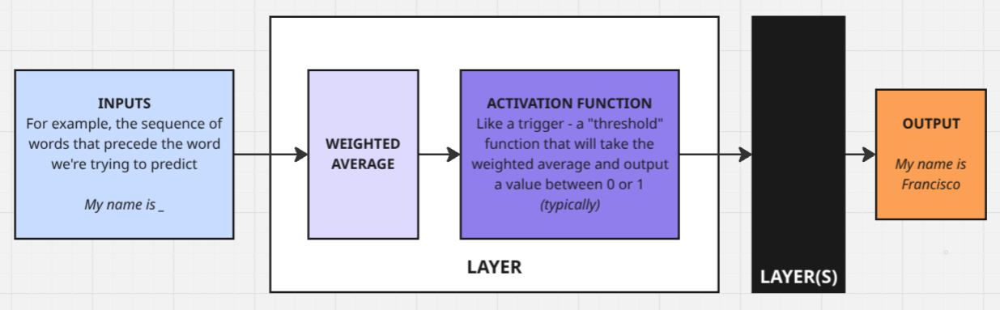
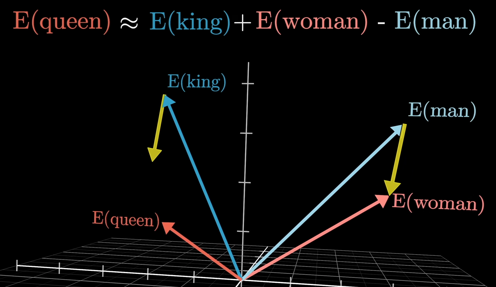

Transformers Maketh LLMs
First, a bit of context
If you haven’t been living under a rock, you’ve probably noticed that generative AI is the coolest kid on the block.
Specifically, large language models (or LLMs) have taken the world by storm, due to how powerful they are at - that’s right - modelling language, and learning from it.
The language modelling problem is not a new one - Chomsky pioneered work in language models way back in the 1950s - and since then (in particular, in the 2000s, following the timely advances in machine learning) people across the world have been trying to invent better ways to model language. The hypothesis was that by learning to accurately model language, computers would gain the ability to perform a series of tasks, due to how expressive and rich with information language intrinsically is.
But because we’re dealing with computers, we need a way to translate this into bits and bytes, or, at the very least, mathematics. The “popular” way to formulate the problem of modelling language goes like this:
What is the probability of a word occurring, given a sequence of words that precedes it?
Essentially, by learning how to predict the next word that makes sense, a model would, by itself, make sense. For the mathematically-curious, what we’re essentially doing is trying to determine the function that best models:
f(?) = P(word_i | {word_0, …, word_i-1})
The traditional way would be to find derive a function that accurately models this behaviour - but given the complexity of language, it’s near impossible to derive something like this, and intractable to solve (an intractable problem can theoretically be solved, but requires impractical and/or infinite resources to do so).
Neural Networks
Neural networks revolutionised machine learning because they allow scientists to brute-force problems. For the unaware, a neural network is, essentially, a somewhat arbitrary combination of non-linear functions, a collection of layers stacked on top of each other, that take inputs and perform weighted averages on them before passing them on to the next layer.

The secret ingredient to neural networks is that every parameter, be it how much we weigh each input, or how we regulate the non-linearity of each layers is learned.
“Learned” is the fancy way of saying the computer tries a bunch of combinations (like, trillions of them) and returns the best result.
As you can imagine, as neural networks grow larger (number of variables in each layer) and deeper (number of layers), this becomes an extremely resource-intensive problem - pre-training GPT4 model required more than 20.000 A100 GPUs (each of these is like 10-100 times more powerful than your laptop’s graphic card!) for 3 months!
But ChatGPT isn’t just a neural network - vanilla neural nets are kind of sucky at taking into account long-distance relationships between words (say, the first and last words of this article), and making them better would be extremely expensive (computationally speaking).
The ‘Attention Is All You Need’ paper
In 2017, when attempting to come up with a better model for machine translation (translation done by computers), Vaswani et. al. presented the “Transformer” architecture in the now famous “Attention Is All You Need” paper.
The transformer followed the recent introduction of “attention” mechanisms in the field, and took it front and center.
The attention mechanism is quite intuitive: (put simply) you take a learned numeric representation of each word in the sequence (roughly speaking, the model assigns a number to each word), and you multiply it by every other learned representation of every word in that sequence (a second learned representation). Then, you weigh a third learned representation of the sequence by the result of this product - essentially weighing the sequence by how much each word is related to each other in the sequence.
Because each numeric representation is learned, the model is given full flexibility over how to represent each word in this not-so-imaginary numerical space, and how important any word is relative to each other!
I say not-so-imaginary numerical space, because if you then take the learned numerical representations of these words, you will find all sorts of quirky relationships! Famously, here’s the King - Man + Woman = Queen, and a few more (all images were taken from this awesome video by 3Blue1Brown on YouTube):



ChatGPT
The Transformer took the field by storm, and eventually led to ChatGPT, and all these chat assistants we all know.
The GPT models are essentially very large transformers, with some sprinkles on top. Which is why - at its core - ChatGPT is a very sophisticated auto-complete, because - following the language modelling reasoning - it’s simply predicting the next sequence of words, given the user’s prompt 🧠.
There are, of course, a few of extra steps that go into making these state-of-the-art word predictors into useful assistants. But it’s hard to disagree with the statement that the true technical marvel of models like ChatGPT is not the architecture per se, but the sheer dimension of it, which is insanely complex to manage and implement. Not only that, but in order to train a model of this dimension, you need a significant slice of the entire internet.
Life is easier when you pay attention
If you’ve been following me, you probably know I’ve been learning about deep learning (🤷) by implementing and training these architectures myself.
To my surprise, working on the transformer was a breeze! It’s extremely stable during training, and it just works. Just so you understand - the last model I implemented - the WaveNet - was the complete opposite: a learning experience, yes, but hell nonetheless. The WaveNet took me many tries over the course of a month to make work decently well.
The transformer? An afternoon.
One difference that stood out is how each architecture models relationships between elements in a sequence - whereas the WaveNet’s is convoluted and difficult to grasp, transformers just make sense. To me, attention is a very elegant representation of how words relate to each other.
So much, that I decided to share it with you 😘
Next steps
My future posts are likely to be more technical - so for the non-technical readers, I’m thankful you’ve paid attention. From here, I will take things up a notch, and attempt to build a BIG (1B+ parameter) model, comparable in size to GPT-2. Much smaller than what we’ve gotten used to (the original ChatGPT was 175B parameters, and the latest models are estimated to be in the trillions!), but big enough to give me a few headaches!
As you can imagine, this is a completely different beast, that will require budgeting (training costs €€€ 💸), distributed compute (🥳), a lot of preliminary testing, and a few dozen academic papers.
See you soon!